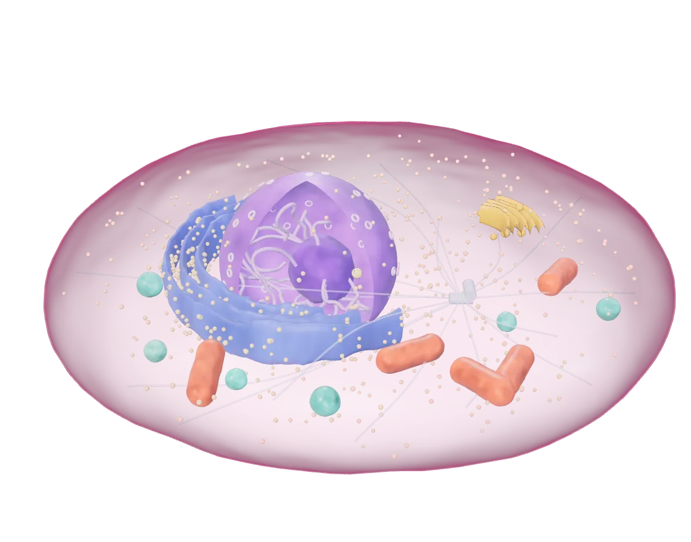

Biologia para o ensino médio e o ENEM
Biologia
Entre na célula, gire as moléculas e veja os processos acontecendo. Tudo feito com dados reais: sequências genéticas verdadeiras, estruturas medidas em laboratório e as propriedades oficiais dos elementos.
- Etapas no curso
- 7
- Para consultar
- 4
- Estruturas em 3D
- 44

Abrir o módulo Célula em 3DTrilha do curso
As etapas seguem a ordem da ementa. Cada uma usa o que você viu na anterior, então vale ir em sequência.
-
Biologia molecular
Comece pela química da vida: água, sais minerais, carboidratos, lipídios, proteínas, enzimas, vitaminas e ácidos nucleicos.
- Água e sais minerais
- Carboidratos e lipídios
- Proteínas e enzimas
- Vitaminas
- Ácidos nucleicos
-
Morfofisiologia celular
Veja como a célula se organiza: a membrana que escolhe o que entra e sai, as organelas e o núcleo.
- Procarionte e eucarionte
- Membrana plasmática
- Transporte pela membrana
- Origem das organelas
- Núcleo
-
A célula por dentro
Entre numa célula em 3D, encontre cada organela e veja por dentro o que ela faz.
- Célula animal e vegetal
- Organelas em 3D
- Bactéria e vírus
- Células especializadas
-
Citogenética
Classifique os cromossomos, monte o cariótipo, acompanhe mitose e meiose e entenda euploidias e aneuploidias.
- Cromossomos e cariótipo
- Mitose
- Meiose
- Euploidias
- Aneuploidias
-
Fotossíntese e respiração
Siga a energia da luz até o ATP: fotossíntese, respiração e fermentação, passo a passo.
- ATP
- Respiração celular
- Fermentação
- Fotossíntese
- Ciclo do carbono
-
Embriologia
Do gameta ao bebê: tipos de ovo, segmentação, gástrula, folhetos, anexos embrionários e a gravidez semana a semana.
- Tipos de ovo
- Segmentação e gástrula
- Folhetos germinativos
- Anexos embrionários
- Embriologia humana
-
Histologia
Veja os quatro tecidos do corpo de perto: epitélios, conjuntivos, sangue, músculo e neurônios em ação.
- Epitélios e glândulas
- Conjuntivo, cartilagem e osso
- Sangue e coagulação
- Contração muscular
- Impulso nervoso e sinapse
-
Taxonomia
Organize a vida: de Aristóteles a Lineu, categorias, nomes científicos, reinos, domínios, cladogramas e chaves de identificação.
- Categorias taxonômicas
- Nomenclatura binomial
- Reinos e domínios
- Cladogramas
- Chave dicotômica
-
Genética
Resolva cruzamentos de Mendel, leia heredogramas e veja como os grupos sanguíneos passam de pais para filhos.
- Leis de Mendel
- Heredogramas
- Grupos sanguíneos
- Herança ligada ao sexo
- Ligação gênica
-
Ecologia
Ligue tudo ao ambiente: teias alimentares, ciclos da matéria, biomas brasileiros e o impacto humano.
- Teias alimentares
- Ciclos biogeoquímicos
- Relações ecológicas
- Biomas brasileiros
- Impactos ambientais
Para consultar
Material de apoio, fora da trilha. Use a qualquer momento, quando precisar ver uma molécula, um elemento ou o DNA de perto.